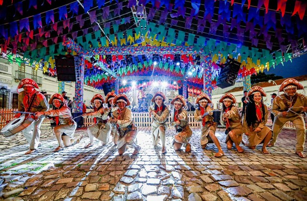

Eventos
Principais eventos
Em grandes eventos como seu famoso Carnaval, o som do frevo arrasta multidões embalando o desfile de blocos e troças, que se misturam a outros ritmos como maracatu, caboclinho, forró, ciranda, coco de roda e até mesmo música eletrônica. O grande destaque é o Galo da Madrugada - reconhecido como o maior bloco carnavalesco do mundo pelo Guiness Book - que entoa pelas ruas do Bairro de São José, há 36 anos: “Ei pessoal, vem moçada! Carnaval começa no Galo da Madrugada”.
O São João é outro evento com inúmeras atrações nos principais polos dos festejos juninos: Sítio da Trindade, Parque Dona Lindu, Pátio de São Pedro, Rua da Moeda e Praça do Arsenal. Arraste o pé ao som da zabumba e sanfona e vivencie de perto esta tradição.